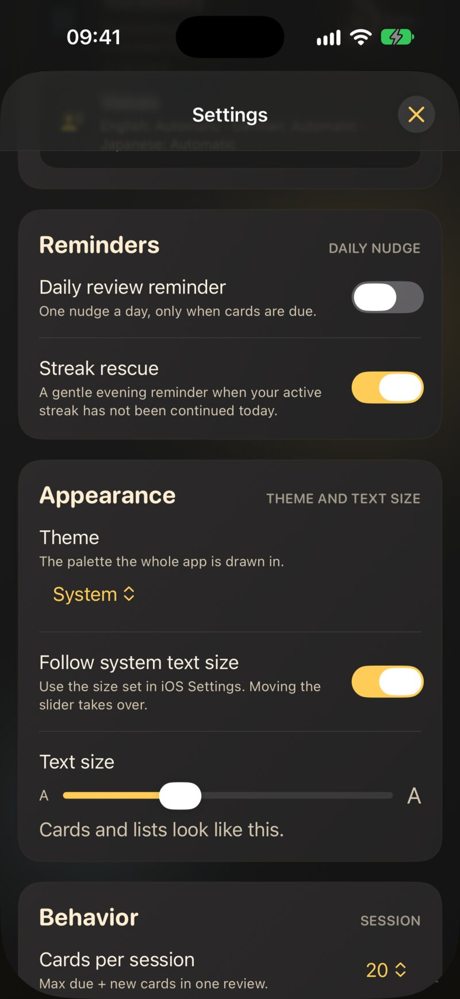
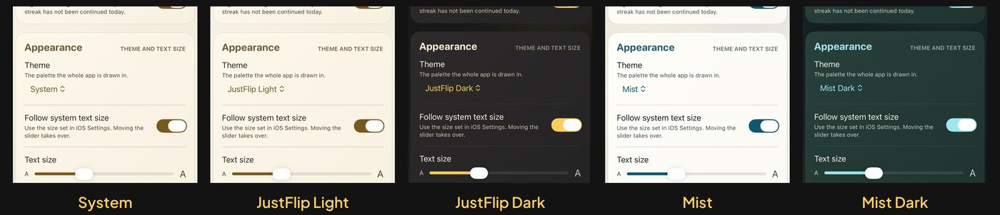

11.1 Ele segue os seus ajustes
O JustFlip! não tem um modo de acessibilidade para ativar. Ele lê os ajustes em Ajustes › Acessibilidade do seu dispositivo e se adapta a eles. Veja o que cada um muda:
| Ajuste do sistema | O que o JustFlip! faz |
|---|---|
| VoiceOver | Lê cada cartão, botão e gráfico, com ações nomeadas para virar e avaliar |
| Texto Maior | Aumenta o texto do app, inclusive o texto dos seus cartões |
| Texto em Negrito | Desenha o texto do app com um peso maior |
| Reduzir Movimento | Impede que o cartão gire ao virar e acalma as outras animações |
| Aumentar Contraste | Muda para cores de contraste mais alto e acrescenta contornos onde só a cor não basta |
| Diferenciar Sem Cor | Acrescenta símbolos, pontos e contornos aos indicadores que, de outro modo, usam cor |
| Controle por Voz | Cada botão responde ao nome visível, e o cartão a algumas frases extras |
O único ajuste de acessibilidade dentro do app é o tamanho do texto, em Ajustes › Aparência. Você pode ler mais sobre ele em Texto maior.
Mantemos um relatório honesto e detalhado do que já está implementado e do que ainda está sendo testado, dispositivo por dispositivo, em https://just-flip.app/accessibility/. Os Rótulos de Acessibilidade da Apple na App Store são publicados uma categoria por vez, só depois que aquela categoria passa nos testes em dispositivos reais.
11.2 VoiceOver
O VoiceOver lê o JustFlip! do mesmo jeito que lê os apps da própria Apple. Listas, formulários e Ajustes usam controles padrão, e itens agrupados, como uma linha de baralho ou uma estatística, são lidos como um único item em vez de uma série de fragmentos.
11.2.1 Cartões e revisões
Um cartão é um único item para o VoiceOver. Ele lê o lado que você está vendo, e uma dica diz para tocar duas vezes para virá-lo. Depois de virar, o VoiceOver anuncia “Pergunta” ou “Resposta”, para você sempre saber em que lado está.
Num cartão, deslize para cima ou para baixo para chegar às ações dele:
- Virar cartão vira o cartão.
- Mostrar conteúdo completo abre um cartão comprido demais para caber numa folha onde você pode lê-lo inteiro.
- Ver imagem em tela cheia ou Ver diagrama em tela cheia abre uma imagem ou um diagrama em tamanho real, onde você pode ampliar.
Os botões de avaliação são lidos com a avaliação primeiro e os detalhes depois: a avaliação, depois quando o cartão voltaria, depois quantas vezes você escolheu aquela avaliação nesta sessão. Depois de cada avaliação, o VoiceOver diz onde você está, por exemplo “Cartão 4 de 20”, e anuncia Prática concluída no fim da sessão.
A capital da França
é {{c1::Paris}}.A capital da França é […].
A voz diz “A capital da França é lacuna.”
As lacunas de cloze nunca são entregues. No lado da pergunta, o VoiceOver diz “lacuna” onde estão as palavras escondidas, ou lê a dica, se a lacuna tiver uma. A resposta só vem depois de virar.
O VoiceOver lê o resto do cartão do mesmo jeito que a própria voz do JustFlip!:
- Dicas faladas são usadas.
[iOS]{ai ó és}é lido como “ai ó és” (Capítulo 3). - Fórmulas são lidas a partir da dica falada, ou do código TeX quando não há dica.
- Diagramas são lidos pelas legendas, não pelas setas.
- Tabelas são lidas linha por linha, célula por célula.
- Imagens são lidas a partir da descrição (veja Escrever cartões acessíveis). Uma imagem sem descrição é lida simplesmente como “Imagem”.
- Marcadores são lidos pelo nome, por exemplo “Marcador vermelho”.
11.2.2 Listas e ações
Os menus de tocar e segurar também têm ações do VoiceOver, então você não precisa do gesto. Numa linha de interesse, deslize para cima ou para baixo para Editar interesse, Importar cartões, Exportar arquivo, Exportar estatísticas e Apagar. Uma linha de baralho oferece Editar baralho e Apagar baralho. No campo de tags, o VoiceOver confirma cada tag quando você a adiciona ou remove.
Em Estatísticas, os gráficos podem ser explorados ponto a ponto: cada ponto é lido com a data e o valor.
Num cartão de oclusão de imagem, a imagem oferece Ampliar, Reduzir e Redefinir zoom como ações, no lugar do gesto de pinça.
11.2.3 No Apple Watch
O relógio lê cada cartão como “Pergunta” ou “Resposta”, seguido do texto. Avaliar um cartão no relógio normalmente significa tocar e segurar o cartão (Capítulo 8). O VoiceOver não consegue tocar e segurar, então as quatro avaliações também são oferecidas como ações no cartão: deslize para cima ou para baixo para escolher De novo, Difícil, Bom ou Fácil.
11.3 Texto maior
De fábrica, o JustFlip! usa o tamanho de texto definido para o dispositivo inteiro em Ajustes › Acessibilidade › Tela e Tamanho do Texto › Texto Maior. Botões, listas, estatísticas e o texto dos seus cartões crescem junto.
Você também pode dar ao JustFlip! um tamanho só dele, separado do resto do dispositivo. Vá a Ajustes › Aparência:

- Usar o tamanho de texto do sistema vem ativado. O JustFlip! usa então o tamanho do dispositivo.
- O controle Tamanho do texto escolhe o tamanho só para o JustFlip!. Movê-lo desativa Usar o tamanho de texto do sistema para você. A linha abaixo dele, “É assim que listas e botões aparecem.”, mostra o tamanho que você está escolhendo.
O controle tem dez passos, do menor tamanho do sistema até o terceiro tamanho de acessibilidade. Os dois maiores tamanhos, que você pode definir no iOS, continuam funcionando no JustFlip! quando vêm do ajuste do dispositivo. O controle só não os oferece. Nesses tamanhos, a maioria dos cartões não cabe mais no cartão, e você abriria quase todos numa folha separada.
O último passo do tour de boas-vindas oferece o mesmo controle, para você definir um tamanho confortável antes da primeira revisão.
No tamanho padrão, o JustFlip! encolhe um pouco um cartão comprido para ele caber (Capítulo 3). Com um tamanho de texto maior, isso não acontece. O cartão é desenhado exatamente no tamanho que você pediu. O que não couber vai sumindo embaixo, e o botão ••• (ou a ação Mostrar conteúdo completo do VoiceOver) abre o resto. Se isso acontecer na maioria dos seus cartões, divida-os em cartões mais curtos. É bom para a sua memória de qualquer jeito.
O suporte a texto maior está quase completo, mas ainda não foi testado em dispositivos em todos os tamanhos. A única falha conhecida: nos maiores tamanhos de todos, o título e os botões de avaliação em volta do cartão, na tela de revisão, podem ficar sem espaço. O cartão em si fica bem. Se você precisa dos maiores tamanhos, definir o tamanho de texto do próprio JustFlip! um ou dois passos abaixo mantém a tela de revisão organizada.
11.4 Movimento, peso e contraste
11.4.1 Reduzir Movimento
Com Reduzir Movimento ativado, o cartão não gira mais em 3D quando você o vira. Ele troca de lado no lugar, um pouco mais rápido. Os outros movimentos do app também ficam mais calmos: cartões saindo voando depois de uma avaliação, o brilho das listas carregando, as ilustrações do tour de boas-vindas, barras de progresso se enchendo e os resultados da revisão.
11.4.2 Texto em Negrito
Texto em Negrito deixa o texto do app mais grosso, como faz em todo o resto do dispositivo. Texto mais grosso ocupa mais espaço, então o JustFlip! leva isso em conta quando calcula se um cartão cabe.
11.4.3 Aumentar Contraste
Com Aumentar Contraste ativado, o JustFlip! muda para versões de contraste mais alto das suas cores, no claro e no escuro. Alguns lugares ganham contornos que, de outro modo, dependeriam só da cor:
- o marcador de um cartão ganha um contorno em volta da cor,
- num cartão de oclusão de imagem, a área sobre a qual você está sendo perguntado ganha mais destaque,
- os diagramas, no cartão e em tela cheia, também usam as cores de contraste mais alto.
Cada par de cores que o app usa para texto é medido contra o fundo nas aparências clara, escura e nas duas versões com Aumentar Contraste, e cada um passa de uma relação de contraste de 4,5:1.
11.4.4 Diferenciar Sem Cor
Quando Diferenciar Sem Cor está ativado, os pequenos indicadores que usam cor ganham também uma forma:
- os pequenos indicadores que mostram quão urgente é um cartão e como você o avaliou por último passam a usar símbolos distintos,
- o mapa de calor de atividade nas Estatísticas acrescenta um, dois ou três pontos para atividade baixa, média e alta, e contorna o quadrado de hoje,
- as áreas de oclusão de imagem ganham mais destaque, como com Aumentar Contraste.
Algumas coisas nunca dependem de cor, sejam quais forem os seus ajustes: os botões de avaliação sempre têm um rótulo e um símbolo, e o marcador selecionado no seletor de marcadores é indicado com um anel e uma marca de seleção.
11.5 Controle por Voz e teclados
O Controle por Voz usa os nomes que você vê na tela, então “Tocar em De novo”, “Tocar em Bom” ou “Tocar em Ajustes” funcionam como você espera. Alguns controles respondem a frases extras:
| Diga | Faz |
|---|---|
| “Tocar em Virar cartão”, “Tocar em Mostrar o outro lado” ou “Tocar em Virar” | Vira o cartão |
| “Tocar em Adiar” ou “Tocar em Soneca” | Abre o menu de adiar durante uma revisão |
O Controle por Voz ainda não foi testado de ponta a ponta em todos os dispositivos. Os controles deslizantes e os menus de tocar e segurar são as partes menos testadas. Se um nome não funcionar ali, “Mostrar números” sempre funciona.
Num teclado, uma revisão não precisa de cursor nenhum: Espaço vira o cartão e as teclas de 1 a 4 o avaliam, no Mac e num iPad com teclado físico. A referência completa está no Capítulo 8. O JustFlip! usa botões, menus e chaves padrão em todo lugar, mas o Acesso Total pelo Teclado ainda não foi testado de ponta a ponta.
11.6 Temas
Um tema é a paleta de cores com que o app inteiro é desenhado. Escolha um em Ajustes › Aparência › Tema. O menu mostra uma pequena amostra do tema atual:
| Tema | Como ele é |
|---|---|
| Sistema | A paleta dourada do JustFlip!, clara ou escura de acordo com o dispositivo. É o padrão. |
| JustFlip claro | A paleta dourada, sempre clara, seja qual for o ajuste do dispositivo |
| JustFlip escuro | A paleta dourada, sempre escura |
| Névoa | Uma paleta clara, calma e mineral, com azul de água limpa, zimbro e sálvia |
| Névoa escura | Névoa sobre superfícies profundas cor de tinta |

A mudança é instantânea: o app inteiro se repinta assim que você escolhe um tema, sem reiniciar. Cada tema já traz o claro ou o escuro embutido, então não há uma chave separada de claro/escuro. Para seguir o modo escuro do dispositivo, escolha Sistema.
O tema é para o app em si. O widget da Tela de Início mantém o dourado do JustFlip! e segue o ajuste claro ou escuro do dispositivo. O app do Apple Watch é sempre escuro. As imagens dos seus cartões aparecem exatamente como são, em qualquer tema.
JustFlip claro e Névoa continuam claros mesmo quando o dispositivo muda para o modo escuro ao pôr do sol, e os dois temas escuros continuam escuros durante o dia. Se o JustFlip! não seguir o seu modo escuro, confira Ajustes › Aparência › Tema. Só Sistema o segue.
11.7 Escrever cartões acessíveis
O app só consegue ler em voz alta o que está nos seus cartões. Estes hábitos fazem um baralho funcionar para todo mundo que o usa, inclusive você, quando ouve com Ler cartões numa caminhada.
- Descreva cada imagem. Quando um lado tem imagem, o editor mostra um campo Descrição da imagem (“Descreva a imagem (opcional)”). O VoiceOver o lê no lugar da imagem. Descreva o que a imagem mostra: “Um pequeno pássaro marrom de peito vermelho num mourão de cerca” diz muito mais que “foto de pássaro”. Num cartão “Que pássaro é este?”, deixe o nome de fora, ou a descrição entrega a resposta (Capítulo 4). A descrição também faz um cartão só com imagem ser encontrado no Spotlight (Capítulo 8). E ela viaja com o baralho quando você o exporta e compartilha.
- Defina o idioma de cada lado. O seletor de Idioma decide qual voz lê o lado em voz alta com o botão de alto-falante e com Ler cartões (Capítulo 7). Um lado sem idioma nunca é falado pela voz do próprio JustFlip!.
- Adicione dicas faladas onde a leitura dá errado.
Uma dica como
$c^2${c ao quadrado}corrige o que a voz do JustFlip! diz e o que o VoiceOver lê, de uma vez. - Dê uma dica às lacunas de cloze quando o contexto for pouco. Com uma dica, o VoiceOver e a voz leem a dica em vez de só “lacuna”.
- Não deixe a cor carregar o significado. Os marcadores são anunciados pelo nome, mas o que cada cor significa fica por sua conta. Se “vermelho” quer dizer “prova semana que vem”, coloque isso numa tag também. Tags são texto, então podem ser lidas e buscadas.
- Dê bons rótulos aos seus diagramas. Um diagrama é lido pelas legendas, então “Iniciar revisão → Cartão pendente?” diz mais que “A → B”.
- Mantenha os cartões curtos. Um cartão curto cabe em tamanhos de texto grandes e no Apple Watch, e também é mais fácil de lembrar.
O seletor de Idioma controla a voz do próprio JustFlip!: o botão de alto-falante e Ler cartões. O VoiceOver lê os cartões com a voz definida nos ajustes do próprio VoiceOver. Para um cartão em outro idioma, o botão de alto-falante do cartão é o jeito mais confiável de ouvi-lo pronunciado corretamente.